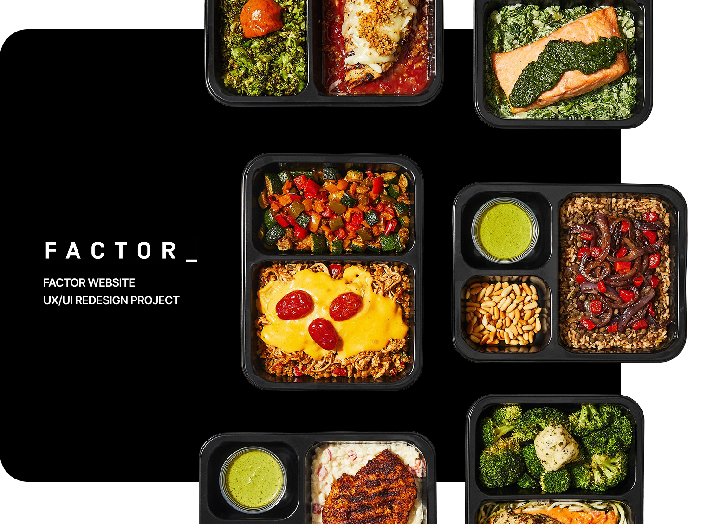
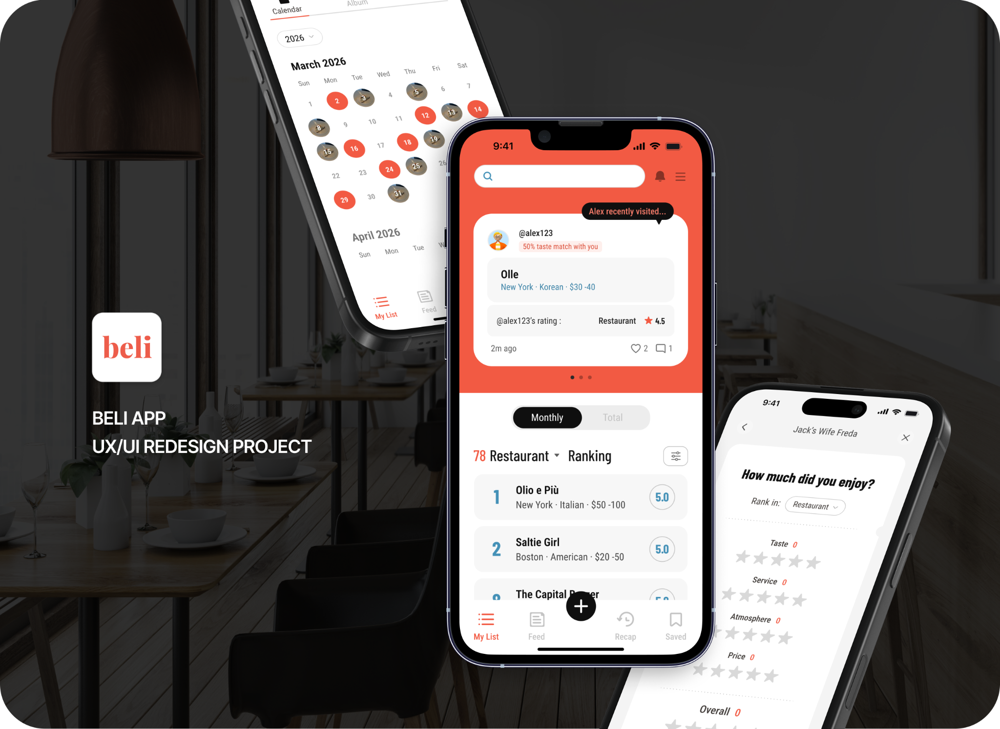

Digital UX
Brand
Visual
Intuitive systems.
Bold
Visual
ella
craft.
Designer creating thoughtful digital experiences
with a strong visual point of view.
Selected Works
Filter by Category

Product UX
Factor Web Experience
Streamlining the subscription journey.

App Design
Beli App Redesign
A personal food memory archive.